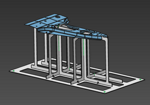

With a simple mouse click a new fixture can be build automatically. It will use all default parameters. |
When hovering the mouse over the workpiece for which the fixture is going to be created, call the Pie menu. |
The result is a fixture with orientation in the global XY direction and with a default height to the workpiece. |
 |